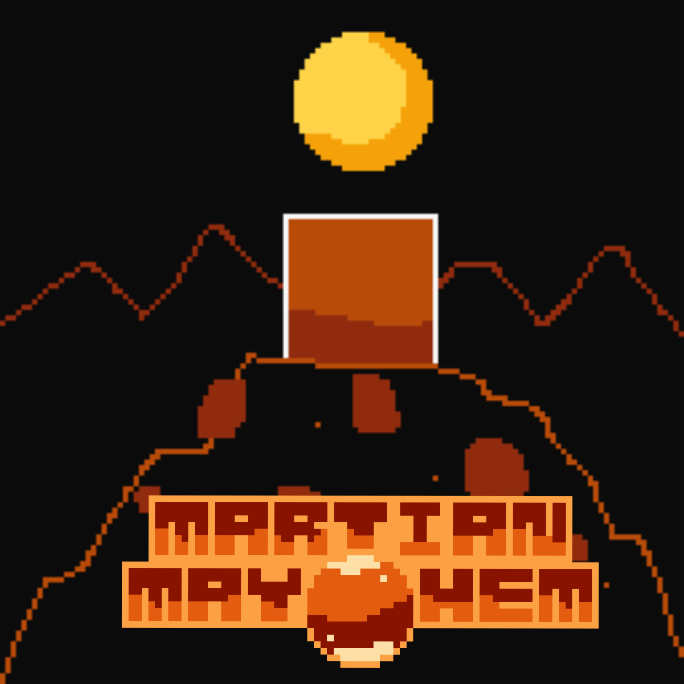

Soundtrack
Out now! A graceful collection of stunning chiptune music by Giulkau!

Martian Mayhem - The Original Soundtrack Volume 1 is free to download! See below to listen to individual tracks online.Click here to download a .ZIP archive of all the files.
Soundtrack composed by Giuliano Cau (See below for contact info.)
Track List
Track 1 - Martian Mayhem (Title)
Track 2 - The Crash Landing (Intro Scene)
Track 3 - Extraterrestrial Wonders (Overworld)
Track 4 - A Monsoon of Rubies (Underground)
Track 5 - The Stellar Ruins (Solar/Lunar Zone)
Track 6 - The Secrets of the Temple (Stellar Temple Zone)
Track 7 - The Guardians of the Temple (Boss Theme)
Track 8 - Adventure Melody (Bonus Track - Unused)
2021 - 2022, The Mayhem Project. By Interstellar Productions. Music by Giuliano Cau /Giulkau. Programmed and Sprited by May. Website by May.
Giulkau's Twitter
Giulkau's Instagram